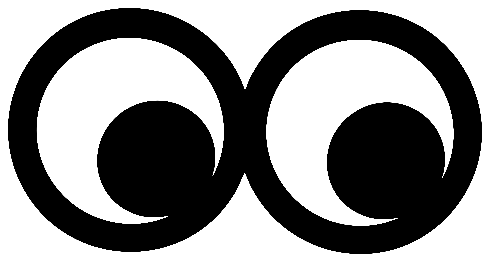
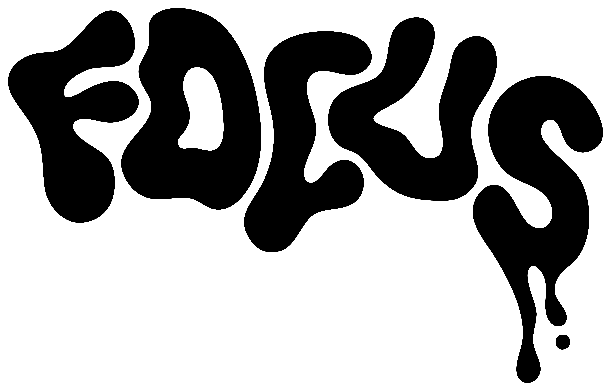
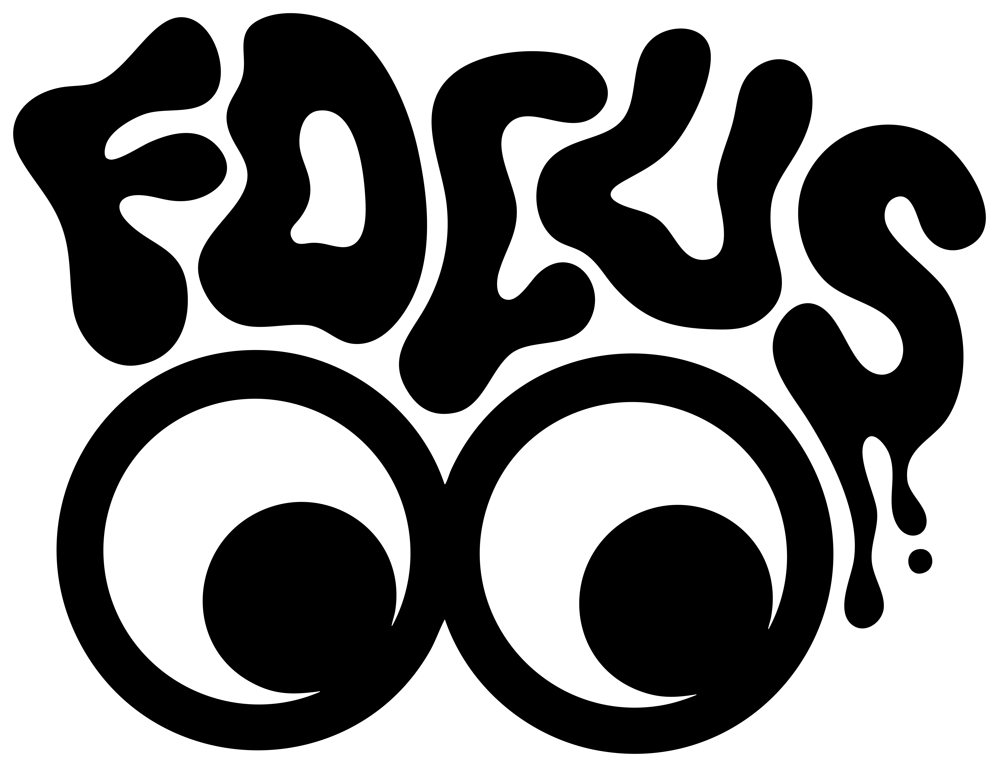

FOCUS est un podcast entre création et psychologie. Des conversations avec des créateurs sur leur parcours, leurs doutes et leur vision. Chaque épisode sort une affiche de collection, quelque chose de concret à tenir entre les mains. Projet co-créé avec Loli Martinez, présenté au Concours Open ISEG 2026.

On consomme tout vite et on oublie vite. FOCUS est né de là : pas expliquer le comment de la création, mais le pourquoi. Pourquoi créons-nous ?
À chaque épisode, un invité du monde créatif. On parle de doutes, de processus, d'intentions. Et à la fin, on sort une affiche. L'idée : graver les mots dans quelque chose de concret, transformer une réflexion en objet.
Le logo FOCUS est dans la continuité de l'univers Gloomy Graphic : typo organique, fluide, volontairement déformée, avec une esthétique pop et expressive. Les deux O deviennent des yeux, pour traduire visuellement l'idée de concentration et d'introspection.
Ce regard est la signature centrale de FOCUS. Il se retrouve sur les affiches, les stickers et le porte-clé de la gamme.



L'univers visuel est en dark mode profond avec un violet intense comme couleur principale. Ce violet colle à la dimension mentale du projet : introspection, concentration, mystère. En light mode, il passe à l'orange, une couleur plus directe, qui tire vers l'énergie et l'envie de créer.
Le site a été codé entièrement à la main en HTML, CSS et JavaScript. Micro-interactions, glassmorphism, curseur personnalisé. L'idée était de faire quelque chose qui ressemble à une galerie d'art numérique.
Après chaque épisode, une affiche sort. Elle part de l'idée centrale de la conversation. Séries limitées, papier 350g mat, numérotées, avec un certificat d'authenticité et des stickers.
L'idée : transformer quelque chose d'éphémère en objet qu'on garde. Donner une forme concrète à l'échange entre l'auditeur et la communauté FOCUS.
Let's work together.